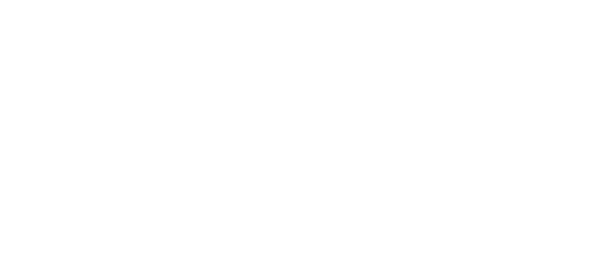

When her young son Minato starts to behave strangely, his mother feels that there is something wrong. Discovering that a teacher is responsible, she storms into the school demanding to know what's going on. But as the story unfolds through the eyes of mother, teacher and child, the truth gradually emerges.